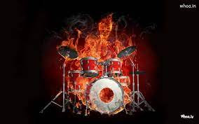

Music is a form of art that uses sound organised in time. Music is also a form of entertainment that puts sounds together in a way that people like, find interesting or dance to. Most music includes people singing with their voices or playing musical instruments, such as the piano, guitar, drums or violin.
The word music comes from the Greek word (mousike), which means "(art) of the Muses". In Ancient Greece the Muses included the goddesses of music, poetry, art, and dance. Someone who makes music is known as a musician.
Click On the Play Button To Play a Sound:
|
 | |||||||||||||||||||
Music can be written in several ways. When it is written on a staff (like in the example shown), the pitches (tones) and their duration are represented by symbols called notes. Notes are put on the lines and in the spaces between the lines. Each position says which tone must be played. The higher the note is on the staff, the higher the pitch of the tone. The lower the notes are, the lower the pitch. The duration of the notes (how long they are played for) is shown by making the note "heads" black or white, and by giving them stems and flags. Music can also be written with letters, naming them as in the solfa "Do, Re, Mi, Fa, So, La, Ti, Do" or representing them by letters. The next table shows how each note of the solfa is represented in the Standard Notation:
|